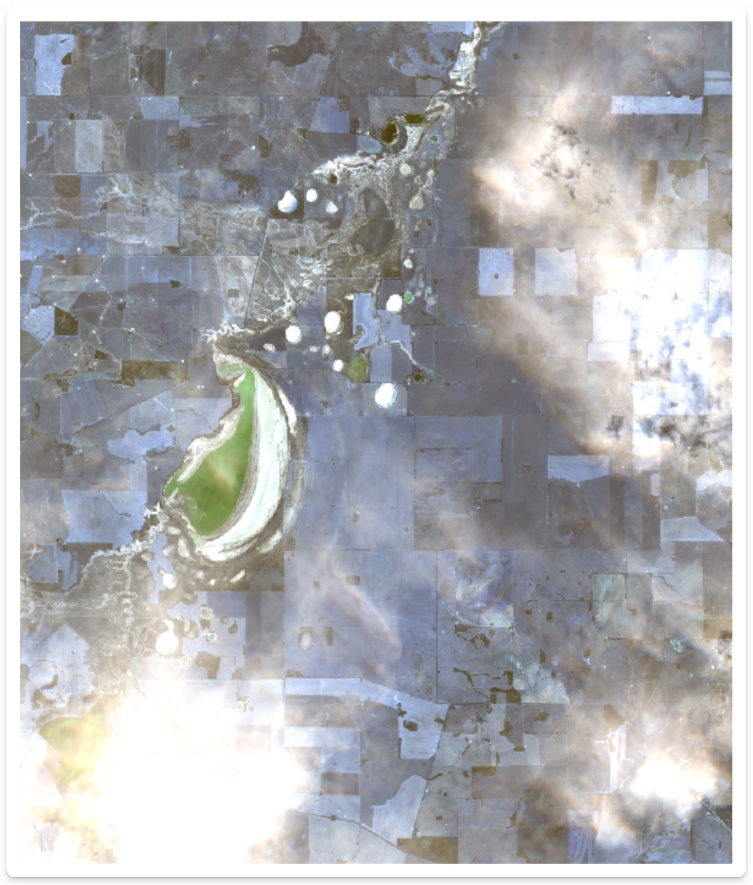

Advanced features
Summary
In Session 3, we will cover additional featores of the Google Earth Engine API, including:
- cloud and shadow masking
- spectral indices
We will also look at sampling points from downloaded images.
- Explore data in Google Earth Engine
- Download large images from Google Earth Engine
- Sample point data from rasters
Demo 1: Additional GEE Functionality
An advantage of using Google Earth Engine to access satellite imagery is that it is possible to preprocess the data in the cloud. This means that you can perform complex operations on large datasets without having to download the data to your local machine. In this demo, we will explore some of the additional functionality that is available in dataharvester.
Cloud and shadow masking
Cloud masking is a process that removes clouds from satellite imagery. This is useful because clouds can obscure the features that we are interested in. If you are directly using the Google Earth Engine API to perform cloud and shadow masking, the process can be quite lengthy.
Fortunately, dataharvester provides a simple argument, mask_clouds, that can be used to perform cloud and shadow masking automatically.
In preprocess_ee(), set mask_clouds = TRUE and to perform cloud masking automatically, using a quality assessment band or a default cloud probability of 60 %. For example, the Sentinel-2 dataset uses a quality assessment band called QA60, and the Landsat 8 dataset uses a quality assessment band called pixel_qa.
The following datasets support near-instant cloud masking thanks to the utility of the eemont package:
- Sentinel-2 MSI: MultiSpectral Instrument, Level-2A
- Sentinel-3 OLCI EFR: Ocean and Land Color Instrument Earth Observation Full Resolution
- Landsat 8 Surface Reflectance Tier 1 and 2
- Landsat 7 Surface Reflectance Tier 1 and 2
- Landsat 5 Surface Reflectance Tier 1 and 2
- Landsat 4 Surface Reflectance Tier 1 and 2
- MCD15A3H.006 MODIS Leaf Area Index/FPAR 4-Day Global 500m
- MOD09GA.006 Terra Surface Reflectance Daily Global 1km and 500m
- MOD09Q1.006 Terra Surface Reflectance 8-Day Global 250m
- MOD09A1.006 Terra Surface Reflectance 8-Day Global 500m
- MOD17A2H.006: Terra Gross Primary Productivity 8-Day Global 500M 500m
- MOD16A2.006: Terra Net Evapotranspiration 8-Day Global 500m
- MOD13Q1.006 Terra Vegetation Indices 16-Day Global 250m
- MOD13A1.006 Terra Vegetation Indices 16-Day Global 500m
- MOD13A2.006 Terra Vegetation Indices 16-Day Global 1km
- MYD09GA.006 Aqua Surface Reflectance Daily Global 1km and 500m
- MYD09Q1.006 Aqua Surface Reflectance 8-Day Global 250m
- MYD09A1.006 Aqua Surface Reflectance 8-Day Global 500m
- MYD17A2H.006: Aqua Gross Primary Productivity 8-Day Global 500M 500m
- MYD13Q1.006 Aqua Vegetation Indices 16-Day Global 250m
- MYD13A1.006 Aqua Vegetation Indices 16-Day Global 500m
- MYD13A2.006 Aqua Vegetation Indices 16-Day Global 1km
- VNP09GA: VIIRS Surface Reflectance Daily 500m and 1km
- VNP13A1: VIIRS Vegetation Indices 16-Day 500m
Let’s use the same bounding boxes as in the previous session.
# Australian
llara_nsw <- c(149.769, -30.335, 149.969, -30.135)
corrigin_wa <- c(118.015, -32.356, 118.215, -32.156)
nedscorner_vic <- c(141.215, -34.241, 141.415, -34.0414)
# Earth Engine only
atlantis <- c(-11.10, 21.35, -11.70, 20.95)First, we will collect satellite imagery from Corrigin, WA using the Sentinel-2 MSI dataset, and see what it looks like. Note that cloud masking is automatically performed by default, so we do not need to specify the mask_clouds argument.
corrigin <- collect_ee(collection = "COPERNICUS/S2_SR",
coords = corrigin_wa,
date = "2021-11-01",
end_date = "2021-11-28")
corrigin <- preprocess_ee(object = corrigin)
corrigin <- map_ee(object = corrigin, bands = c("B2", "B3", "B4"))The image should look something like this:

What happens if we disable cloud masking? We can do this by setting the mask_clouds argument to FALSE.
# Let's use the same `corrigins` object to preprocess without cloud masking
corrigin_clouds <- preprocess_ee(object = corrigin, mask_clouds = FALSE)
corrigin_clouds <- map_ee(object = corrigin_clouds, bands = c("B2", "B3", "B4"))
Can you see the difference?
When to use cloud masking
Cloud masking is enabled by default.
Depending on your research question, you will need to make a decision about cloud masking and whether it is appropriate. For example, if you want to study how clouds affect your variable, like vegetation, you may want to turn off cloud masking so that clouds are part of the data.
Spectral indices
Spectral indices are mathematical combinations of spectral bands that are used to extract information from satellite imagery. For example, the Normalised Difference Vegetation Index (NDVI) is a common spectral index that is used to estimate the amount of vegetation in an area. With spectral indices, information about the spectral properties of the geospatial data can be extracted from the imagery.
The dataharvester package provides support to a wide collection of spectral indices thanks to Awesome Spectral Indices, and provides a simple interface to calculate these indices. In the preprocess_ee() function, the spectral argument can be used to specify which spectral indices should be calculated.
There are a total of 216 spectral indices that are supported Awesome Spectral Indices. Note that the spectral indices are divided into several categories: Vegetation, Burn, Water, Snow, Drought, Urban, Kernel and RADAR.
dataharvester supports automatic calculation of spectral indices for the following datasets:
- Sentinel-2 MSI: MultiSpectral Instrument, Level-2A
- Sentinel-2 MSI: MultiSpectral Instrument, Level-1C
- Landsat 8 Surface Reflectance Tier 1 and 2
- Landsat 8 Level 2, Collection 2, Tier 1
- Landsat 7 Surface Reflectance Tier 1 and 2
- Landsat 7 Level 2, Collection 2, Tier 1
- Landsat 5 Surface Reflectance Tier 1 and 2
- Landsat 4 Surface Reflectance Tier 1 and 2
Some MODIS satellite products may also be supported - perhaps try it out and let us know if it works!
Let’s calculate some spectral indices on nedscorner_vic. We will calculate the Normalised Difference Vegetation Index (NDVI), the Normalised Difference Water Index (NDWI; McFeeters, 1996), and the Normalised Difference Snow Index (NDSI, Riggs et al., 1994).
neds <- collect_ee(collection = "COPERNICUS/S2_SR",
coords = nedscorner_vic,
date = "2021-11-01",
end_date = "2021-11-28")
neds <- preprocess_ee(object = neds, spectral = c("NDVI", "NDWI", "NDSI"))Importantly, when mapping single bands, you should use the bands argument to specify only one band. This will be optimised in the near future.
neds <- map_ee(object = neds, bands = "NDVI")Once you have previewed one image, you can preview another.
neds <- map_ee(object = neds, bands = "NDWI")
neds <- map_ee(object = neds, bands = "NDSI")We will spend some time playing with spectral indices over several locations.
Demo 2: Sampling data from images
In many cases, you will want to sample data from the satellite imagery. You have already seen this functionality with the harvest() package.
Perhaps you have a list of sample locations and you want to extract the satellite data at those locations. Or perhaps you want to extract the satellite data at a regular grid of locations. dataharvester provides a simple interface to sample data from satellite imagery using the extract_values() function.
Preparing your sample locations
You will need a list of sample locations/points that you want to extract data from. The function extract_values() accepts a data.frame or matrix object of two columns, where the first column is the longitude (x) and the second column is the latitude (y).
You may already posess a sample locations file. For example, it could be a dataset of sample locations from a field experiment. For this demo, we have one such file called "Pointdata_Llara.csv" that can be used on the llara_nsw bounding box.
llara <- read.csv("Pointdata_Llara.csv")
head(llara)This data file might contain several columns of data, but we only need two columns, which are the longitude and latitude of the sample locations. We can extract these columns using the [, c(x, y)] syntax.
coordinates <- llara[, c(3, 2)]Preparing your images
You have already done this a couple of times, but for this exercise let’s download more data to sample. We will download from Landsat 8, calculate some spectral indices, and then sample the data.
llara_img <- collect_ee(
collection = "LANDSAT/LC08/C02/T1_L2",
coords = llara_nsw,
date = "2018-01-01",
end_date = "2019-01-01")
llara_img <- preprocess_ee(
object = llara,
mask_clouds = TRUE,
reduce = "median",
spectral = c("kVARI", "VrNIRBI", "MuWIR"))
llara_img <- download_ee(object = llara,
bands = c("kVARI", "VrNIRBI", "MuWIR"),
scale = 100,
out_path = "llara")
extract_values(
path = "llara/ee_LAN_20180101_20190101_kVARIVrNIRBIMuWIR_median_100.0m.tif",
xy_coords = coordinates)What if I want to sample images by YAML using dataharvester?
Good question! We can do this by providing a file that contains the sample locations, and then including the path to this file in the YAML file, as well as the names of the columns that contain the longitude and latitude coordinates. For example, we have a file called "points_llara.csv" in the assets folder, and it can be used like this:
---
infile: assets/points_llara.csv
colname_lat: Lat
colname_lng: Long
... # other YAML codeThe harvest() function will sample these locations automatically, and plot the results if plot = TRUE.
Exercise 1: Google Earth Engine playground
Exercise 2: Return to YAML configuration
Thank you
This is the end of the workshop! Thanks for making it this far.
If you have any questions and/or suggestions, now is the time to make yourself heard. Meanwhile, perhaps there is time to discuss the following:
- What is next for the
dataharvesterpackage? Will there be other packages? - What other data sources would you like to see supported?
- What other functionality would you like to see added?